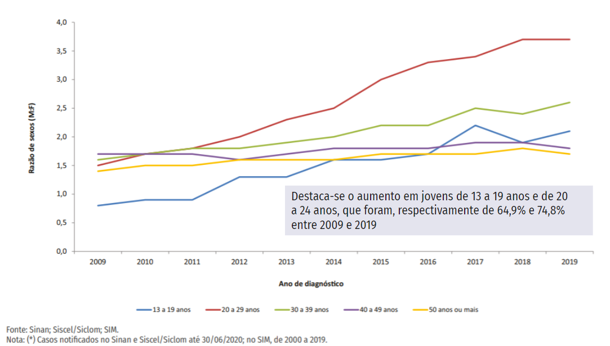

Saúde Jovem - Uma estratégia para a prevenção de doenças sexualmente transmissíveis.
Saúde Jovem é um projeto de pesquisa focado na promoção da saúde dos
jovens e adolescentes. O objetivo é ampliar o acesso dessa população
ao Sistema Único de Saúde e ainda oferecer informações qualificadas
voltadas para prevenção das Infecções Sexualmente Transmissíveis
(IST).
Apesar dos avanços informacionais, percebemos a carência de App
em Saúde que abordem esse tema. A ideia é trazer conteúdos relevantes
que podem contribuir para a educação em saúde de jovens e
adolescentes.

Desde 1998, anualmente, o Ministério da Saúde vem investindo em campanhas de prevenção referente às IST’s, especialmente no tocante à prevenção da AIDS (BRASIL, 2020). Entretanto, o quadro epidemiológico atual deixa claro que o jovem brasileiro se apresenta em situação de vulnerabilidade frente às ISTs, HIV/Aids e Hepatites Virais. Essa situação pode representar indicativo de ineficiência das campanhas adotadas pelo MS como estratégia de prevenção dessas doenças nesse recorte etário.
Visando suprir essa lacuna, o Saúde Jovem foi desenvolvido para ser distribuído gratuitamente. Sabemos o quanto o uso de smartphones está presente em nosso dia a dia, o jovem brasileiro em especial é super conectado, segundo o IBGE. Não é à toa que a quantidade de celulares já se ultrapassou a quantidade de habitantes.
O nosso projeto é vinculado a um projeto maior, no qual se apresenta de forma transdisciplinar, envolvendo pesquisadores na área da saúde coletiva de várias instituições do país, como o IFPB, UFAM, a Universidade Federal do Rio Grande do Sul e a UnB.
Após a finalização do Saúde Jovem, foram realizadas oficinas nessas diferentes instituições com jovens potenciais usuários do nosso aplicativo, visando testar sua usabilidade. Ao final dessa fase de teste, constatamos que o aplicativo móvel Saúde Jovem, possui um layout atraente e fácil e usar.
Dessa forma, de maneira geral, podemos dizer que o Saúde Jovem foi avaliado positivamente e identificou-se que ele apresenta facilidade na aprendizagem, eficiência e facilidade de memorização. Além disso, tem potencial impacto na saúde pública, e pode ampliar o acesso da juventude ao SUS e à informação qualificada.